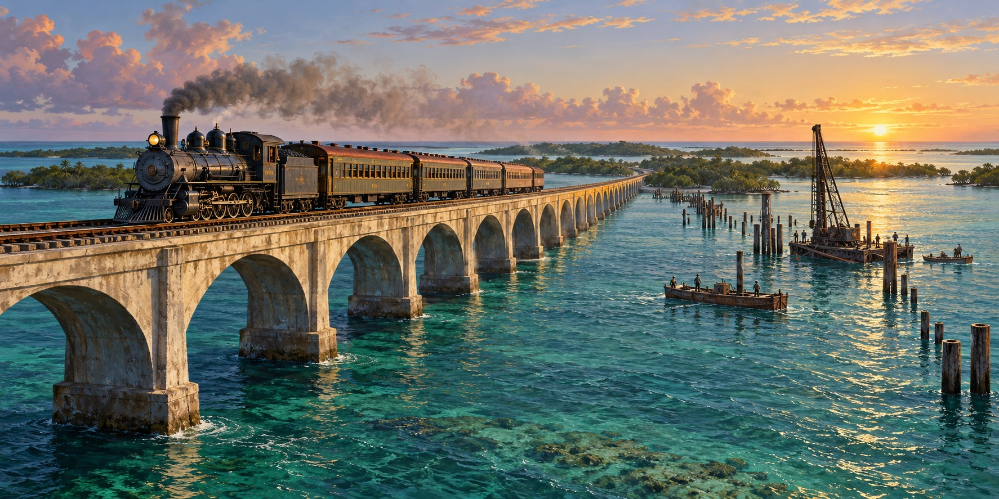

The Storm That Destroyed Flagler’s Railroad
How the Overseas Railroad Was Built and Its Route Became a Highway

The Labor Day Hurricane of 1935 destroyed Henry Flagler’s Overseas Railroad in September 1935 and ended the rail era of the Florida Keys. This article does not retell that disaster. It tells how the railroad came to exist: what it took to lay 128 miles of track across open water and rock islands with Gilded Age engineering and an eighty-two-year-old man’s determination, and what the storm made possible in its place.
A Railroad Built for a Canal That Hadn’t Opened Yet
Flagler had already built the Florida East Coast Railway down the length of the peninsula as plans for the Panama Canal sharpened interest in Caribbean trade. Key West, the closest deep-water American port to the canal, looked certain to become a hub for trade with Cuba, Latin America and canal traffic.
Flagler sent his engineer, William J. Krome, to survey routes south from Homestead. Krome’s team considered cutting through the Everglades to Cape Sable and crossing twenty-five miles of open water to Big Pine Key, but chose the natural chain of islands through Key Largo, crossing at Jewfish Creek. The modern Overseas Highway still follows that corridor.
Cement From Germany, Steel From Pennsylvania
Construction began in 1905. Work crews had to move equipment and supplies to islands and open-water sites, establish access where there were no ordinary roads, and build structures that could carry locomotives in a corrosive marine environment. The challenges were logistical as well as structural.
The longest structure, the Seven Mile Bridge from Knight’s Key near Marathon toward Little Duck Key, closed a seven-mile open-water gap that few projects of its kind had tried. The finished line ran 128 miles from Homestead to Key West, with forty-two stretches over open sea, seventeen miles of concrete viaducts and bridges, and twenty miles of filled causeway.
Hurricanes During the Build
The railroad survived hurricanes long before 1935. Hurricanes in 1906, 1909 and 1910 threatened work during the seven-year build, which tested bridges and embankments not yet finished. Crews rebuilt and pressed on through heat, mosquitoes and disease. The skeptics who had mocked the “Folly” began calling the finished line the “Eighth Wonder of the World.”
An Eighty-Two-Year-Old Man’s Dream
Flagler rode the first train into Key West on January 22, 1912, aboard his private railcar, the Rambler, weeks after his eighty-second birthday. He had followed the construction closely throughout. The extension was financed as part of Flagler’s private railway enterprise.
A Dream That Never Quite Arrived
The railroad’s role outlasted its original commercial expectations. Flagler died in 1913, but the route remained a physical connection between the Keys and the mainland. After the rail era ended, much of that corridor could be adapted for a different form of transportation.
What the Storm Cleared the Way For
After the 1935 hurricane, the financially strained Florida East Coast Railway could not afford to rebuild a line that many historians judge was already nearing its end. Within a few years, the roadbed and surviving bridges became the foundation of the Overseas Highway. The commercial vision never fully arrived, and the storm struck only twenty-three years after completion, but the path carved across 128 miles of water and rock never stopped carrying people to Key West. It changed from steel rails to paved road.
Quick Facts
| Why built | Key West envisioned as a Caribbean and Panama Canal trade hub |
|---|---|
| Nicknames | “Flagler’s Folly,” then “Eighth Wonder of the World” |
| Survey engineer | William J. Krome; route via Jewfish Creek to Key Largo |
| Construction | 1905–1912; peak workforce about 4,000 |
| Scope | 128 miles; 42 stretches of open sea; 17 miles of viaducts and bridges; 20 miles of causeway |
| Longest structure | Seven Mile Bridge, Knight’s Key to Little Duck Key |
| Hurricanes during build | 1906, 1909 and 1910 interrupted construction |
| Completion | January 22, 1912; Flagler (82) rides the Rambler into Key West |
| End of the rail line | 1935 Labor Day Hurricane; roadbed reused for the Overseas Highway |
Did You Know?
The railroad was built across open water to serve a canal that had not yet opened.
Crews had to bring construction supplies to remote island and open-water sites.
Vocabulary
Viaduct: a long bridge-like structure that carries a railroad or road over water or low ground.
Causeway: a raised roadway built across water or marshy ground, often on fill.
Roadbed: the prepared foundation on which railroad track or pavement is laid.
Discussion Questions
1. Why did Flagler build to Key West, and why did the trade hub never arrive?
2. How did a ruined railroad become a highway?
Related Articles
FLH-0005 — The Labor Day Hurricane of 1935
FLH-0016 — How Hurricane Forecasting Changed Florida
Sources
Henry Morrison Flagler Museum. “First Train to Paradise: The Railroad That Went to Sea” and “Florida East Coast Railway.” flaglermuseum.org
Key West Art & Historical Society. “Flagler Overseas Railway Timeline.” kwahs.org
American-Rails.com. “Key West Extension (Overseas Railroad): History, Construction, Decline.” american-rails.com
University of Miami News. “Flagler’s Journey to Florida.” features.miami.edu
Standiford, Les. Last Train to Paradise. Crown, 2002.
Overseas Railroad Historical Site. “About the Overseas Railroad.” overseasrailroad.railfan.net
Flagler Museum — Construction of the Over-Sea Railroad